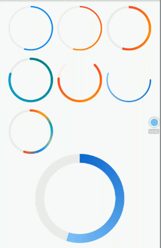

10.5 自绘实例：圆形背景渐变进度条¶
本节我们实现一个圆形背景渐变进度条，它支持：
支持多种背景渐变色。
任意弧度；进度条可以不是整圆。
可以自定义粗细、两端是否圆角等样式。
可以发现要实现这样的一个进度条是无法通过现有组件组合而成的，所以我们通过自绘方式实现，代码如下：
import 'dart:math';
import 'package:flutter/material.dart';
class GradientCircularProgressIndicator extends StatelessWidget {
GradientCircularProgressIndicator({
this.strokeWidth = 2.0,
@required this.radius,
@required this.colors,
this.stops,
this.strokeCapRound = false,
this.backgroundColor = const Color(0xFFEEEEEE),
this.totalAngle = 2 * pi,
this.value
});
///粗细
final double strokeWidth;
/// 圆的半径
final double radius;
///两端是否为圆角
final bool strokeCapRound;
/// 当前进度，取值范围 [0.0-1.0]
final double value;
/// 进度条背景色
final Color backgroundColor;
/// 进度条的总弧度，2*PI为整圆，小于2*PI则不是整圆
final double totalAngle;
/// 渐变色数组
final List<Color> colors;
/// 渐变色的终止点，对应colors属性
final List<double> stops;
@override
Widget build(BuildContext context) {
double _offset = .0;
// 如果两端为圆角，则需要对起始位置进行调整，否则圆角部分会偏离起始位置
// 下面调整的角度的计算公式是通过数学几何知识得出，读者有兴趣可以研究一下为什么是这样
if (strokeCapRound) {
_offset = asin(strokeWidth / (radius * 2 - strokeWidth));
}
var _colors = colors;
if (_colors == null) {
Color color = Theme
.of(context)
.accentColor;
_colors = [color, color];
}
return Transform.rotate(
angle: -pi / 2.0 - _offset,
child: CustomPaint(
size: Size.fromRadius(radius),
painter: _GradientCircularProgressPainter(
strokeWidth: strokeWidth,
strokeCapRound: strokeCapRound,
backgroundColor: backgroundColor,
value: value,
total: totalAngle,
radius: radius,
colors: _colors,
)
),
);
}
}
//实现画笔
class _GradientCircularProgressPainter extends CustomPainter {
_GradientCircularProgressPainter({
this.strokeWidth: 10.0,
this.strokeCapRound: false,
this.backgroundColor = const Color(0xFFEEEEEE),
this.radius,
this.total = 2 * pi,
@required this.colors,
this.stops,
this.value
});
final double strokeWidth;
final bool strokeCapRound;
final double value;
final Color backgroundColor;
final List<Color> colors;
final double total;
final double radius;
final List<double> stops;
@override
void paint(Canvas canvas, Size size) {
if (radius != null) {
size = Size.fromRadius(radius);
}
double _offset = strokeWidth / 2.0;
double _value = (value ?? .0);
_value = _value.clamp(.0, 1.0) * total;
double _start = .0;
if (strokeCapRound) {
_start = asin(strokeWidth/ (size.width - strokeWidth));
}
Rect rect = Offset(_offset, _offset) & Size(
size.width - strokeWidth,
size.height - strokeWidth
);
var paint = Paint()
..strokeCap = strokeCapRound ? StrokeCap.round : StrokeCap.butt
..style = PaintingStyle.stroke
..isAntiAlias = true
..strokeWidth = strokeWidth;
// 先画背景
if (backgroundColor != Colors.transparent) {
paint.color = backgroundColor;
canvas.drawArc(
rect,
_start,
total,
false,
paint
);
}
// 再画前景，应用渐变
if (_value > 0) {
paint.shader = SweepGradient(
startAngle: 0.0,
endAngle: _value,
colors: colors,
stops: stops,
).createShader(rect);
canvas.drawArc(
rect,
_start,
_value,
false,
paint
);
}
}
@override
bool shouldRepaint(CustomPainter oldDelegate) => true;
}
下面我们来测试一下，为了尽可能多的展示GradientCircularProgressIndicator的不同外观和用途，这个示例代码会比较长，并且添加了动画，建议读者将此示例运行起来观看实际效果，我们先看看其中的一帧动画的截图：

示例代码：
import 'dart:math';
import 'package:flutter/material.dart';
import '../widgets/index.dart';
class GradientCircularProgressRoute extends StatefulWidget {
@override
GradientCircularProgressRouteState createState() {
return new GradientCircularProgressRouteState();
}
}
class GradientCircularProgressRouteState
extends State<GradientCircularProgressRoute> with TickerProviderStateMixin {
AnimationController _animationController;
@override
void initState() {
super.initState();
_animationController =
new AnimationController(vsync: this, duration: Duration(seconds: 3));
bool isForward = true;
_animationController.addStatusListener((status) {
if (status == AnimationStatus.forward) {
isForward = true;
} else if (status == AnimationStatus.completed ||
status == AnimationStatus.dismissed) {
if (isForward) {
_animationController.reverse();
} else {
_animationController.forward();
}
} else if (status == AnimationStatus.reverse) {
isForward = false;
}
});
_animationController.forward();
}
@override
void dispose() {
_animationController.dispose();
super.dispose();
}
@override
Widget build(BuildContext context) {
return SingleChildScrollView(
child: Center(
child: Column(
crossAxisAlignment: CrossAxisAlignment.center,
children: <Widget>[
AnimatedBuilder(
animation: _animationController,
builder: (BuildContext context, Widget child) {
return Padding(
padding: const EdgeInsets.symmetric(vertical: 16.0),
child: Column(
children: <Widget>[
Wrap(
spacing: 10.0,
runSpacing: 16.0,
children: <Widget>[
GradientCircularProgressIndicator(
// No gradient
colors: [Colors.blue, Colors.blue],
radius: 50.0,
strokeWidth: 3.0,
value: _animationController.value,
),
GradientCircularProgressIndicator(
colors: [Colors.red, Colors.orange],
radius: 50.0,
strokeWidth: 3.0,
value: _animationController.value,
),
GradientCircularProgressIndicator(
colors: [Colors.red, Colors.orange, Colors.red],
radius: 50.0,
strokeWidth: 5.0,
value: _animationController.value,
),
GradientCircularProgressIndicator(
colors: [Colors.teal, Colors.cyan],
radius: 50.0,
strokeWidth: 5.0,
strokeCapRound: true,
value: CurvedAnimation(
parent: _animationController,
curve: Curves.decelerate)
.value,
),
TurnBox(
turns: 1 / 8,
child: GradientCircularProgressIndicator(
colors: [Colors.red, Colors.orange, Colors.red],
radius: 50.0,
strokeWidth: 5.0,
strokeCapRound: true,
backgroundColor: Colors.red[50],
totalAngle: 1.5 * pi,
value: CurvedAnimation(
parent: _animationController,
curve: Curves.ease)
.value),
),
RotatedBox(
quarterTurns: 1,
child: GradientCircularProgressIndicator(
colors: [Colors.blue[700], Colors.blue[200]],
radius: 50.0,
strokeWidth: 3.0,
strokeCapRound: true,
backgroundColor: Colors.transparent,
value: _animationController.value),
),
GradientCircularProgressIndicator(
colors: [
Colors.red,
Colors.amber,
Colors.cyan,
Colors.green[200],
Colors.blue,
Colors.red
],
radius: 50.0,
strokeWidth: 5.0,
strokeCapRound: true,
value: _animationController.value,
),
],
),
GradientCircularProgressIndicator(
colors: [Colors.blue[700], Colors.blue[200]],
radius: 100.0,
strokeWidth: 20.0,
value: _animationController.value,
),
Padding(
padding: const EdgeInsets.symmetric(vertical: 16.0),
child: GradientCircularProgressIndicator(
colors: [Colors.blue[700], Colors.blue[300]],
radius: 100.0,
strokeWidth: 20.0,
value: _animationController.value,
strokeCapRound: true,
),
),
//剪裁半圆
ClipRect(
child: Align(
alignment: Alignment.topCenter,
heightFactor: .5,
child: Padding(
padding: const EdgeInsets.only(bottom: 8.0),
child: SizedBox(
//width: 100.0,
child: TurnBox(
turns: .75,
child: GradientCircularProgressIndicator(
colors: [Colors.teal, Colors.cyan[500]],
radius: 100.0,
strokeWidth: 8.0,
value: _animationController.value,
totalAngle: pi,
strokeCapRound: true,
),
),
),
),
),
),
SizedBox(
height: 104.0,
width: 200.0,
child: Stack(
alignment: Alignment.center,
children: <Widget>[
Positioned(
height: 200.0,
top: .0,
child: TurnBox(
turns: .75,
child: GradientCircularProgressIndicator(
colors: [Colors.teal, Colors.cyan[500]],
radius: 100.0,
strokeWidth: 8.0,
value: _animationController.value,
totalAngle: pi,
strokeCapRound: true,
),
),
),
Padding(
padding: const EdgeInsets.only(top: 10.0),
child: Text(
"${(_animationController.value * 100).toInt()}%",
style: TextStyle(
fontSize: 25.0,
color: Colors.blueGrey,
),
),
)
],
),
),
],
),
);
},
),
],
),
),
);
}
}
怎么样，很炫酷吧！GradientCircularProgressIndicator已经被添加进了笔者维护的flukit组件库中了，读者如果有需要，可以直接依赖flukit包。